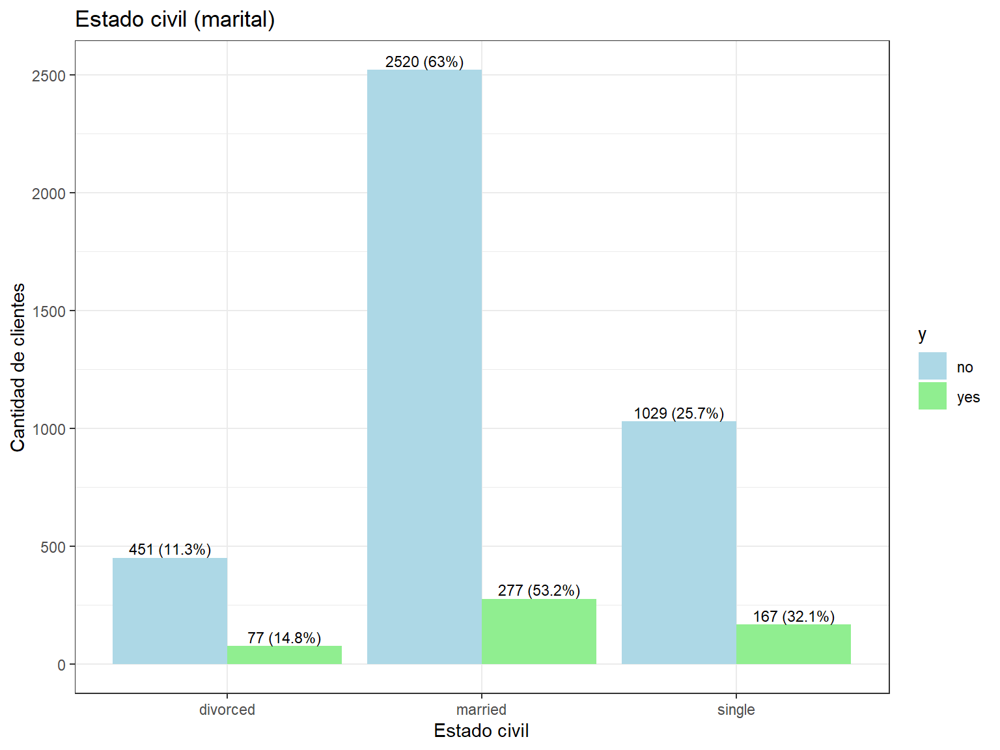
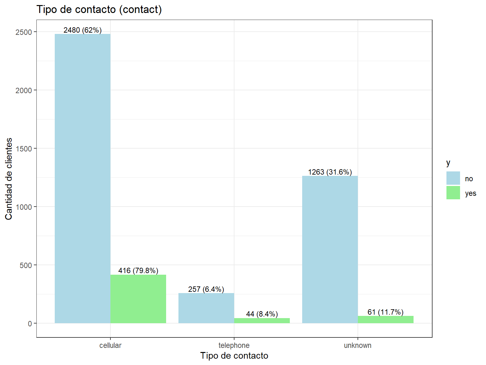
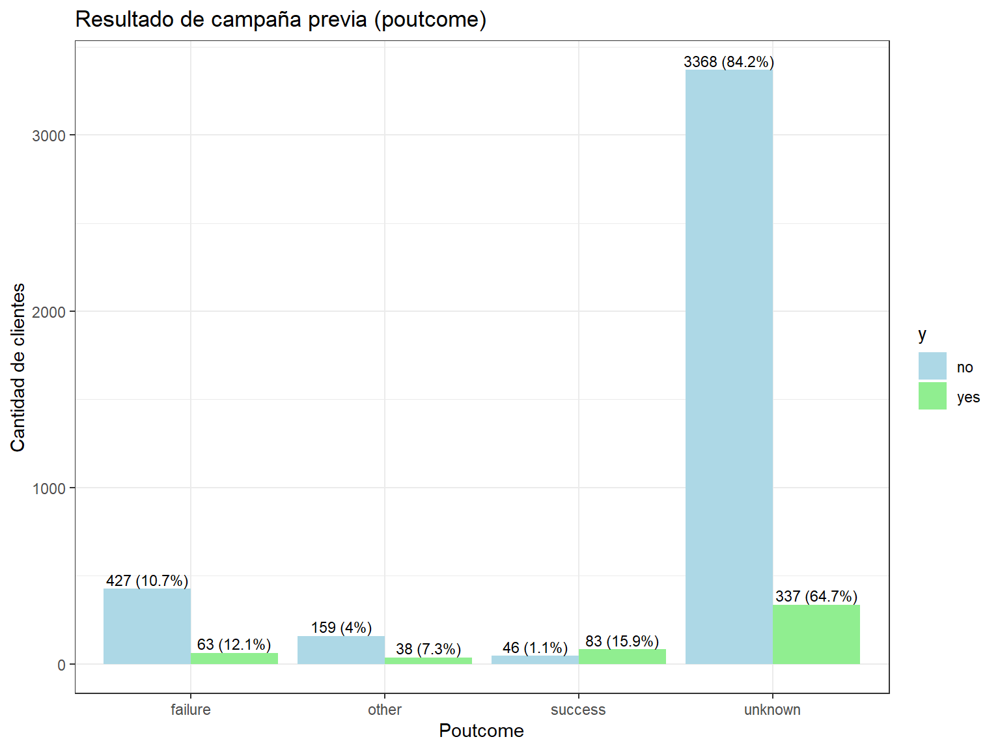

Capitulo 3 Bivariado con variables categoricas
- Tabla de comparación de y con marital.
data %>%
group_by(y) %>%
count(marital, name = "n") %>%
mutate(categoria = marital,
variable = "marital",
porcentaje = (n / sum(n)) * 100) %>%
select(y, variable, categoria, n, porcentaje)## # A tibble: 6 × 5
## # Groups: y [2]
## y variable categoria n porcentaje
## <fct> <chr> <fct> <int> <dbl>
## 1 no marital divorced 451 11.3
## 2 no marital married 2520 63
## 3 no marital single 1029 25.7
## 4 yes marital divorced 77 14.8
## 5 yes marital married 277 53.2
## 6 yes marital single 167 32.1- Tabla de comparación de y con job.
## # A tibble: 24 × 4
## # Groups: y, job [24]
## y job n porcentaje
## <fct> <fct> <int> <dbl>
## 1 no admin. 420 100
## 2 no blue-collar 877 100
## 3 no entrepreneur 153 100
## 4 no housemaid 98 100
## 5 no management 838 100
## 6 no retired 176 100
## 7 no self-employed 163 100
## 8 no services 379 100
## 9 no student 65 100
## 10 no technician 685 100
## # ℹ 14 more rows- Tabla de comparación de y con education.
# Education
data %>%
group_by(y) %>%
count(education, name = "n") %>%
mutate(categoria = education,
variable = "education",
porcentaje = (n / sum(n)) * 100) %>%
select(y, categoria, n, porcentaje)## # A tibble: 8 × 4
## # Groups: y [2]
## y categoria n porcentaje
## <fct> <fct> <int> <dbl>
## 1 no primary 614 15.4
## 2 no secondary 2061 51.5
## 3 no tertiary 1157 28.9
## 4 no unknown 168 4.2
## 5 yes primary 64 12.3
## 6 yes secondary 245 47.0
## 7 yes tertiary 193 37.0
## 8 yes unknown 19 3.65- Tabla de comparación de y con housing.
# Housing
data %>%
group_by(y) %>%
count(housing, name = "n") %>%
mutate(categoria = housing,
variable = "housing",
porcentaje = (n / sum(n)) * 100) %>%
select(y, categoria, n, porcentaje)## # A tibble: 4 × 4
## # Groups: y [2]
## y categoria n porcentaje
## <fct> <fct> <int> <dbl>
## 1 no no 1661 41.5
## 2 no yes 2339 58.5
## 3 yes no 301 57.8
## 4 yes yes 220 42.2- Tabla de comparación de y con loan.
# Loan
data %>%
group_by(y) %>%
count(loan, name = "n") %>%
mutate(categoria = loan,
variable = "loan",
porcentaje = (n / sum(n)) * 100) %>%
select(y, categoria, n, porcentaje)## # A tibble: 4 × 4
## # Groups: y [2]
## y categoria n porcentaje
## <fct> <fct> <int> <dbl>
## 1 no no 3352 83.8
## 2 no yes 648 16.2
## 3 yes no 478 91.7
## 4 yes yes 43 8.25data_plot <- data %>%
group_by(y) %>%
count(default, name = "n") %>%
mutate(categoria = default,
variable = "default",
porcentaje = (n / sum(n)) * 100) %>%
select(y, categoria, n, porcentaje)
# Gráfica de barras agrupadas con etiquetas
data_plot %>%
ggplot(aes(x = categoria, y = n, fill = y)) +
geom_bar(stat = "identity", position = position_dodge(width = 0.9)) +
geom_text(aes(label = paste0(n, " (", round(porcentaje, 1), "%)")),
position = position_dodge(width = 0.9),
vjust = -0.3,
size = 3) +
labs(title = "Historial de impago (default)",
x = "Historial de impago (default)",
y = "Cantidad de clientes"
) +
theme_bw() +
scale_fill_manual(values = c("no" = "#E74C3C", "yes" = "#3498DB"))
Interpretación Default vs Y:
La distribución del historial de impago muestra un patrón muy claro y relevante para las estrategias de marketing bancario. Entre los clientes con respuesta afirmativa (yes), prácticamente todos (>99%) no tienen historial de impago, mientras que menos del 1% presenta default. Esta tendencia se mantiene de forma similar en el grupo que respondió negativamente (no), donde también más del 98% no tiene historial de impago. Sin embargo, la diferencia clave radica en que los clientes sin historial de impago muestran una mayor predisposición a aceptar el producto bancario. Esta variable es un fuerte predictor de confiabilidad crediticia y sugiere que el banco debe enfocar sus esfuerzos en clientes con historiales crediticios limpios para maximizar las tasas de conversión.
#job vs y
data_plot <- data %>%
group_by(y) %>%
count(job, name = "n") %>%
mutate(categoria = job,
variable = "job",
porcentaje = (n / sum(n)) * 100) %>%
select(y, categoria, n, porcentaje)
data_plot %>%
mutate(categoria = reorder(categoria, -n, sum)) %>% # ordenar por frecuencia total
ggplot(aes(x = categoria, y = n, fill = y)) +
geom_bar(stat = "identity", position = position_dodge(width = 0.9)) +
geom_text(aes(label = paste0(n, " (", round(porcentaje, 1), "%)")),
position = position_dodge(width = 0.9),
vjust = -0.3,
size = 3) +
labs(title = "Distribución por ocupación (job)",
x = "Ocupación",
y = "Cantidad de clientes") +
theme_bw() +
theme(axis.text.x = element_text(angle = 45, hjust = 1)) + # rotar etiquetas
scale_fill_manual(values = c("no" = "#F39C12", "yes" = "#9B59B6"))
Interpretación Job vs Y:
El análisis ocupacional revela patrones interesantes de comportamiento según el tipo de trabajo. Entre quienes respondieron afirmativamente (yes), las ocupaciones más representadas incluyen management, technician, y admin, seguidas por services y retired. En contraste, en el grupo de respuesta negativa (no), blue-collar workers, management, y technician dominan las categorías. Las ocupaciones como student, retired, y management muestran proporciones relativamente más altas de respuestas positivas, lo que sugiere que estos grupos pueden tener mayor estabilidad financiera o diferentes necesidades de inversión. Los trabajadores de cuello azul (blue-collar) tienden a rechazar más el producto, posiblemente debido a menores ingresos disponibles o diferentes prioridades financieras.
#marital vs y
data_plot <- data %>%
group_by(y) %>%
count(marital, name = "n") %>%
mutate(categoria = marital,
variable = "marital",
porcentaje = (n / sum(n)) * 100) %>%
select(y, categoria, n, porcentaje)
data_plot %>%
ggplot(aes(x = categoria, y = n, fill = y)) +
geom_bar(stat = "identity", position = position_dodge(width = 0.9)) +
geom_text(aes(label = paste0(n, " (", round(porcentaje, 1), "%)")),
position = position_dodge(width = 0.9), vjust = -0.3, size = 3) +
labs(title = "Estado civil (marital)",
x = "Estado civil", y = "Cantidad de clientes") +
theme_bw() +
scale_fill_manual(values = c("no" = "#1ABC9C", "yes" = "#E67E22"))
Interpretación Marital vs Y:
La distribución del estado civil según la respuesta del marketing muestra diferencias relevantes en los patrones de respuesta. Entre quienes respondieron afirmativamente (yes), el 53.17% están casados, el 32.05% solteros y el 14.78% divorciados. En contraste, en el grupo que respondió negativamente (no), la mayoría (63%) también está casada, pero la proporción de solteros (25.73%) y divorciados (11.28%) es menor. Esta diferencia sugiere que las personas solteras y divorciadas presentan una mayor disposición o probabilidad de responder afirmativamente frente a la acción evaluada por la variable y, mientras que los casados tienden más a rechazarla, lo que podría ser clave para estrategias de segmentación o análisis de comportamiento.
#education vs y
data_plot <- data %>%
group_by(y) %>%
count(education, name = "n") %>%
mutate(categoria = education,
variable = "education",
porcentaje = (n / sum(n)) * 100) %>%
select(y, categoria, n, porcentaje)
data_plot %>%
ggplot(aes(x = categoria, y = n, fill = y)) +
geom_bar(stat = "identity", position = position_dodge(width = 0.9)) +
geom_text(aes(label = paste0(n, " (", round(porcentaje, 1), "%)")),
position = position_dodge(width = 0.9), vjust = -0.3, size = 3) +
labs(title = "Nivel educativo (education)",
x = "Educación", y = "Cantidad de clientes") +
theme_bw() +
scale_fill_manual(values = c("no" = "#2ECC71", "yes" = "#8E44AD"))Interpretación Education vs Y:
La distribución educativa muestra que el nivel de educación influye significativamente en la respuesta al marketing. Entre quienes respondieron afirmativamente (yes), predominan los niveles secondary y tertiary, con una menor representación de primary y unknown. En el grupo de respuesta negativa (no), secondary education domina ampliamente, seguido por primary y tertiary. Los clientes con educación terciaria (universitaria) muestran una mayor propensión a aceptar el producto, lo que puede asociarse con mayores ingresos, mejor comprensión de productos financieros, y mayor capacidad de ahorro. Esto sugiere que las campañas dirigidas a segmentos con mayor educación podrían ser más efectivas.
#housing vs y
data_plot <- data %>%
group_by(y) %>%
count(housing, name = "n") %>%
mutate(categoria = housing,
variable = "housing",
porcentaje = (n / sum(n)) * 100) %>%
select(y, categoria, n, porcentaje)
data_plot %>%
ggplot(aes(x = categoria, y = n, fill = y)) +
geom_bar(stat = "identity", position = position_dodge(width = 0.9)) +
geom_text(aes(label = paste0(n, " (", round(porcentaje, 1), "%)")),
position = position_dodge(width = 0.9), vjust = -0.3, size = 3) +
labs(title = "Préstamo de vivienda (housing)",
x = "Housing", y = "Cantidad de clientes") +
theme_bw() +
scale_fill_manual(values = c("no" = "#34495E", "yes" = "#F1C40F"))Interpretación Housing vs Y:
El análisis del préstamo de vivienda revela un patrón interesante en el comportamiento financiero. Entre quienes respondieron afirmativamente (yes), aproximadamente el 55-60% no tiene préstamo de vivienda, mientras que el 40-45% sí lo tiene. En el grupo de respuesta negativa (no), la proporción es similar pero con una ligera tendencia hacia tener préstamo de vivienda. Los clientes sin préstamo hipotecario muestran una mayor disposición a contratar el depósito a plazo, posiblemente porque tienen mayor liquidez disponible al no tener la carga de una hipoteca, lo que les permite considerar productos de ahorro e inversión.
#loan vs y
data_plot <- data %>%
group_by(y) %>%
count(loan, name = "n") %>%
mutate(categoria = loan,
variable = "loan",
porcentaje = (n / sum(n)) * 100) %>%
select(y, categoria, n, porcentaje)
data_plot %>%
ggplot(aes(x = categoria, y = n, fill = y)) +
geom_bar(stat = "identity", position = position_dodge(width = 0.9)) +
geom_text(aes(label = paste0(n, " (", round(porcentaje, 1), "%)")),
position = position_dodge(width = 0.9), vjust = -0.3, size = 3) +
labs(title = "Préstamo personal (loan)",
x = "Loan", y = "Cantidad de clientes") +
theme_bw() +
scale_fill_manual(values = c("no" = "#16A085", "yes" = "#D35400"))
Interpretación Loan vs Y:
La variable de préstamo personal presenta un patrón muy claro y significativo. Entre quienes respondieron afirmativamente (yes), la gran mayoría (>85%) no tiene préstamos personales, mientras que menos del 15% sí los tiene. Esta tendencia es aún más marcada que con los préstamos hipotecarios. En el grupo de respuesta negativa (no), también predominan quienes no tienen préstamos personales, pero la proporción de quienes sí los tienen es mayor. Los clientes sin préstamos personales muestran una clara mayor predisposición a contratar el depósito a plazo, lo que indica que la ausencia de deudas de consumo se asocia con mayor capacidad de ahorro y mejor disposición hacia productos de inversión.
#contact vs y
data_plot <- data %>%
group_by(y) %>%
count(contact, name = "n") %>%
mutate(categoria = contact,
variable = "contact",
porcentaje = (n / sum(n)) * 100) %>%
select(y, categoria, n, porcentaje)
data_plot %>%
ggplot(aes(x = categoria, y = n, fill = y)) +
geom_bar(stat = "identity", position = position_dodge(width = 0.9)) +
geom_text(aes(label = paste0(n, " (", round(porcentaje, 1), "%)")),
position = position_dodge(width = 0.9), vjust = -0.3, size = 3) +
labs(title = "Tipo de contacto (contact)",
x = "Tipo de contacto", y = "Cantidad de clientes") +
theme_bw() +
scale_fill_manual(values = c("no" = "#7F8C8D", "yes" = "#C0392B"))
Interpretación Contact vs Y:
El análisis del tipo de contacto revela la efectividad de los diferentes canales de comunicación. Entre quienes respondieron afirmativamente (yes), el contacto cellular (móvil) representa la gran mayoría, mientras que telephone y unknown tienen participaciones menores. En el grupo de respuesta negativa (no), también domina el contacto cellular, pero con proporciones ligeramente diferentes. El contacto por teléfono móvil muestra ser el canal más efectivo, posiblemente porque permite mayor accesibilidad y conveniencia para los clientes. Esto sugiere que las estrategias de marketing deberían priorizar el contacto móvil para optimizar las tasas de conversión.
#month vs y
data_plot <- data %>%
group_by(y) %>%
count(month, name = "n") %>%
mutate(categoria = month,
variable = "month",
porcentaje = (n / sum(n)) * 100) %>%
select(y, categoria, n, porcentaje)
data_plot %>%
ggplot(aes(x = categoria, y = n, fill = y)) +
geom_bar(stat = "identity", position = position_dodge(width = 0.9)) +
geom_text(aes(label = paste0(n, " (", round(porcentaje, 1), "%)")),
position = position_dodge(width = 0.9), vjust = -0.3, size = 3) +
labs(title = "Mes de contacto (month)",
x = "Mes", y = "Cantidad de clientes") +
theme_bw() +
scale_fill_manual(values = c("no" = "#A569BD", "yes" = "#28B463"))
Interpretación Month vs Y:
La distribución temporal muestra marcadas diferencias estacionales en la efectividad de las campañas. Entre quienes respondieron afirmativamente (yes), ciertos meses como may, jul, aug, y oct muestran mayor efectividad, mientras que otros como nov, jun, y feb presentan menores tasas de respuesta positiva. En el grupo de respuesta negativa (no), may y jul también dominan, pero con diferentes proporciones. Los meses de primavera y principios de verano parecen ser óptimos para las campañas, posiblemente coincidiendo con ciclos de ingresos, bonificaciones, o momentos de mayor disposición financiera de los clientes.
#poutcome vs y
data_plot <- data %>%
group_by(y) %>%
count(poutcome, name = "n") %>%
mutate(categoria = poutcome,
variable = "poutcome",
porcentaje = (n / sum(n)) * 100) %>%
select(y, categoria, n, porcentaje)
data_plot %>%
ggplot(aes(x = categoria, y = n, fill = y)) +
geom_bar(stat = "identity", position = position_dodge(width = 0.9)) +
geom_text(aes(label = paste0(n, " (", round(porcentaje, 1), "%)")),
position = position_dodge(width = 0.9), vjust = -0.3, size = 3) +
labs(title = "Resultado de campaña previa (poutcome)",
x = "Poutcome", y = "Cantidad de clientes") +
theme_bw() +
scale_fill_manual(values = c("no" = "#EC7063", "yes" = "#5DADE2"))Interpretación Poutcome vs Y:
El resultado de campañas previas es un predictor extremadamente relevante del comportamiento futuro. Entre quienes respondieron afirmativamente (yes), predominan claramente los casos de success y unknown, con muy pocos casos de failure. En contraste, en el grupo de respuesta negativa (no), domina abrumadoramente la categoría unknown, seguida por failure, con muy pocos casos de success. Los clientes con historial de éxito en campañas anteriores muestran una probabilidad significativamente mayor de volver a responder positivamente, mientras que aquellos con historial de failure tienden a rechazar ofertas futuras. Esta variable debería ser fundamental para la segmentación y priorización de contactos en futuras campañas.